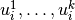
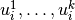

Machine Learning Algorithms¶
Table of Contents
The graph machine learning algorithms currently supported fall into these categories: Collaborative Filtering, Graphical Models, and Topic Modeling.
Collaborative Filtering¶
See the models section of the API for details.
Using ALS Optimization to Solve the Collaborative Filtering Problem¶
ALS optimizes the vector  and the bias
and the bias
 alternatively between user profiles using least squares on users
and items.
On the first iteration, the first feature of each item is set to its average
rating, while the others are set to small random numbers.
The algorithm then treats the
alternatively between user profiles using least squares on users
and items.
On the first iteration, the first feature of each item is set to its average
rating, while the others are set to small random numbers.
The algorithm then treats the  ‘s as constant and optimizes
 for each user,
‘s as constant and optimizes
 for each user,  .
For an individual user, this is a simple ordinary least squares optimization
over the items that user has ranked.
Next, the algorithm takes the
.
For an individual user, this is a simple ordinary least squares optimization
over the items that user has ranked.
Next, the algorithm takes the  ’s as constant and optimizes the
’s as constant and optimizes the
 for each item,
for each item,  .
This is again an ordinary least squares optimization predicting the user
rating of person that has ranked item .
.
This is again an ordinary least squares optimization predicting the user
rating of person that has ranked item .
At each step, the bias is computed for either items of users and the objective function, shown below, is evaluated. The bias term for an item or user, computed for use in the next iteration is given by:

The optimization is said to converge if the change in the objective function is less than the convergence_threshold parameter or the algorithm hits the maximum number of supersteps.

Note that the equations above omit user and item subscripts for generality.
The  regularization term, lambda, tries to avoid overfitting by
penalizing the magnitudes of the parameters, and
regularization term, lambda, tries to avoid overfitting by
penalizing the magnitudes of the parameters, and  is a tradeoff
parameter that balances the two terms and is usually determined by cross
validation (CV).
is a tradeoff
parameter that balances the two terms and is usually determined by cross
validation (CV).
After the parameters and are
determined, given an item  the rating from user
the rating from user  can
be predicted by the simple linear model:
can
be predicted by the simple linear model:

Matrix Factorization based on Conjugate Gradient Descent (CGD)¶
This is the Conjugate Gradient Descent (CGD) with Bias for collaborative filtering algorithm. Our implementation is based on the paper:
Y. Koren. Factorization Meets the Neighborhood: a Multifaceted Collaborative Filtering Model. In ACM KDD 2008. (Equation 5) http://public.research.att.com/~volinsky/netflix/kdd08koren.pdf
This algorithm for collaborative filtering is used in recommendation systems to suggest items (products, movies, articles, and so on) to potential users based on historical records of items that all users have purchased, rated, or viewed. The records are usually organized as a preference matrix P, which is a sparse matrix holding the preferences (such as, ratings) given by users to items. Similar to ALS, CGD falls in the category of matrix factorization/latent factor model that infers user profiles and item profiles in low-dimension space, such that the original matrix P can be approximated by a linear model.
This factorization method uses the conjugate gradient method for its optimization subroutine. For more on conjugate gradient descent in general, see: http://en.wikipedia.org/wiki/Conjugate_gradient_method.
The Mathematics of Matrix Factorization via CGD¶
Matrix factorization by conjugate gradient descent produces ratings by using
the (limited) space of observed rankings to infer a user-factors vector
 for each user , and an item-factors vector
for each user , and an item-factors vector
 for each item , and then producing a ranking by user
of item by the dot-product
for each item , and then producing a ranking by user
of item by the dot-product  where
where  is a baseline ranking calculated as
is a baseline ranking calculated as  .
.
The optimum model is chosen to minimum the following sum, which penalizes square distance of the prediction from observed rankings and complexity of the model (through the regularization term):

Where:
– Observed ranking of item
– Set of pairs
for each observed ranking of item
– The average rating over all ratings of all items by all users.
– How much user
– How much item
– A regularization parameter specified by the user.
This optimization problem is solved by the conjugate gradient descent method. Indeed, this difference in how the optimization problem is solved is the primary difference between matrix factorization by CGD and matrix factorization by ALS.
Comparison between CGD and ALS¶
Both CGD and ALS provide recommendation systems based on matrix factorization; the difference is that CGD employs the conjugate gradient descent instead of least squares for its optimization phase. In particular, they share the same bipartite graph representation and the same cost function.
- ALS finds a better solution faster - when it can run on the cluster it is given.
- CGD has slighter memory requirements and can run on datasets that can overwhelm the ALS-based solution.
When feasible, ALS is a preferred solver over CGD, while CGD is recommended only when the application requires so much memory that it might be beyond the capacity of the system. CGD has a smaller memory requirement, but has a slower rate of convergence and can provide a rougher estimate of the solution than the more computationally intensive ALS.
The reason for this is that ALS solves the optimization problem by a least squares that requires inverting a matrix. Therefore, it requires more memory and computational effort. But ALS, a 2nd-order optimization method, enjoys higher convergence rate and is potentially more accurate in parameter estimation.
On the otherhand, CGD is a 1.5th-order optimization method that approximates the Hessian of the cost function from the previous gradient information through N consecutive CGD updates. This is very important in cases where the solution has thousands or even millions of components.
Usage¶
The matrix factorization by CGD procedure takes a property graph, encoding a biparite user-item ranking network, selects a subset of the edges to be considered (via a selection of edge labels), takes initial ratings from specified edge property values, and then writes each user-factors vector to its user vertex in a specified vertex property name and each item-factors vector to its item vertex in the specified vertex property name.
Graphical Models¶
The graphical models find more insights from structured noisy data. See graph API for details of the Label Propagation (LP) and Loopy Belief Propagation (LBP).
Topic Modeling¶
For Topic Modeling, see: http://en.wikipedia.org/wiki/Topic_model
Topic Modeling with Latent Dirichlet Allocation¶
Topic modeling algorithms are a class of statistical approaches to partitioning items in a data set into subgroups. As the name implies, these algorithms are often used on corpora of textual data, where they are used to group documents in the collection into semantically-meaningful groupings. For an overall introduction to topic modeling, the reader might refer to the work of David Blei and Michael Jordan, who are credited with creating and popularizing topic modeling in the machine learning community. In particular, Blei’s 2011 paper provides a nice introduction, and is freely-available online [1] .
LDA is a commonly-used algorithm for topic modeling, but, more broadly, is considered a dimensionality reduction technique. It contrasts with other approaches (for example, latent semantic indexing), in that it creates what’s referred to as a generative probabilistic model — a statistical model that allows the algorithm to generalize its approach to topic assignment to other, never-before-seen data points. For the purposes of exposition, we’ll limit the scope of our discussion of LDA to the world of natural language processing, as it has an intuitive use there (though LDA can be used on other types of data). In general, LDA represents documents as random mixtures over topics in the corpus. This makes sense because any work of writing is rarely about a single subject. Take the case of a news article on the President of the United States of America’s approach to healthcare as an example. It would be reasonable to assign topics like President, USA, health insurance, politics, or healthcare to such a work, though it is likely to primarily discuss the President and healthcare.
LDA assumes that input corpora contain documents pertaining to a given number of topics, each of which are associated with a variety of words, and that each document is the result of a mixture of probabilistic samplings: first over the distribution of possible topics for the corpora, and second over the list of possible words in the selected topic. This generative assumption confers one of the main advantages LDA holds over other topic modeling approaches, such as probabilistic and regular LSI. As a generative model, LDA is able to generalize the model it uses to separate documents into topics to documents outside the corpora. For example, this means that using LDA to group online news articles into categories like Sports, Entertainment, and Politics, it would be possible to use the fitted model to help categorize newly-published news stories. Such an application is beyond the scope of approaches like LSI. What’s more, when fitting an LSI model, the number of parameters that have to be estimated scale linearly with the number of documents in the corpus, whereas the number of parameters to estimate for an LDA model scales with the number of topics — a much lower number, making it much better-suited to working with large data sets.
The Typical LDA Workflow¶
Although every user is likely to have his or her own habits and preferred approach to topic modeling a document corpus, there is a general workflow that is a good starting point when working with new data. The general steps to the topic modeling with LDA include:
- Data preparation and ingest
- Assignment to training or testing partition
- Graph construction
- Training LDA
- Evaluation
- Interpretation of results
Data preparation and ingest¶
Most topic modeling workflows involve several data pre-processing and cleaning steps. Depending on the characteristics of the data being analyzed, there are different best-practices to use here, so it’s important to be familiar with the standard procedures for analytics in the domain from which the text originated. For example, in the biomedical text analytics community, it is common practice for text analytics workflows to involve pre-processing for identifying negation statements (Chapman et al., 2001 [2] ). The reason for this is many analysts in that domain are examining text for diagnostic statements — thus, failing to identify a negated statement in which a disease is mentioned could lead to undesirable false-positives, but this phenomenon may not arise in every domain. In general, both stemming and stop word filtering are recommended steps for topic modeling pre-processing. Stemming refers to a set of methods used to normalize different tenses and variations of the same word (for example, stemmer, stemming, stemmed, and stem). Stemming algorithms will normalize all variations of a word to one common form (for example, stem). There are many approaches to stemming, but the Porter Stemming (Porter, 2006 [3] ) is one of the most commonly-used.
Removing common, uninformative words, or stop word filtering, is another commonly-used step in data pre-processing for topic modeling. Stop words include words like the, and, or a, but the full list of uninformative words can be quite long and depend on the domain producing the text in question. Example stop word lists online [4] can be a great place to start, but being aware of the best-practices in the applicalbe field is necessary to expand upon these.
There may be other pre-processing steps needed, depending on the type of text being worked with. Punctuation removal is frequently recommended, for example. To determine what’s best for the text being analyzed, it helps to understand a bit about what how LDA analyzes the input text. To learn the topic model, LDA will typically look at the frequency of individual words across documents, which are determined based on space-separation. Thus, each word will be interpreted independent of where it occurs in a document, and without regard for the words that were written around it. In the text analytics field, this is often referred to as a bag of words approach to tokenization, the process of separating input text into composite features to be analyzed by some algorithm. When choosing pre-processing steps, it helps to keep this in mind. Don’t worry too much about removing words or modifying their format — you’re not manipulating your data! These steps simply make it easier for the topic modeling algorithm to find the latent topics that comprise your corpus.
Assignment to training or testing partition¶
The random assignment to training and testing partitions is an important step in most every machine learning workflow. It is common practice to withhold a random selection of one’s data set for the purpose of evaluating the accuracy of the model that was learned from the training data. The results of this evaluation allow the user to confidently speak about the generalizability of the trained model. When speaking in these terms, be cautious that you only discuss generalizability to the broader population from which your data was originally obtained. If a topic model is trained on neuroscience-related publications, for example, evaluating the model on other neuroscience-related publications is valid. It would not be valid to discuss the model’s ability to work on documents from other domains.
There are various schools of thought for how to assign a data set to training and testing collections, but all agree that the process should be random. Where analysts disagree is in the ratio of data to be assigned to each. In most situations, the bulk of data will be assigned to the training collection, because the more data that can be used to train the algorithm, the better the resultant model will typically be. It’s also important that the testing collection have sufficient data to be able to reflect the characteristics of the larger population from which it was drawn (this becomes an important issue when working with data sets with rare topics, for example). As a starting point, many people will use a 90%/10% training/test collection split, and modify this ratio based on the characteristics of the documents being analyzed.
Graph construction¶
Trusted Analytics uses a bipartite graph, to learn an LDA topic model. This graph contains vertices in two columns. The left-hand column contains unique ids, each corresponding to a document in the training collection, while the right-hand column contains unique ids corresponding to each word in the entire training set, following any pre-processing steps that were used. Connections between these columns, or edges, denote the number of times a particular word appears in a document, with the weight on the edge in question denoting the number of times the word was found there. After graph construction, many analysts choose to normalize the weights using one of a variety of normalization schemes. One approach is to normalize the weights to sum to 1, while another is to use an approach called term frequency-inverse document frequency (tfidf), where the resultant weights are meant to reflect how important a word is to a document in the corpus. Whether to use normalization — or what technique to use — is an open question, and will likely depend on the characteristics of the text being analyzed. Typical text analytics experiments will try a variety of approaches on a small subset of the data to determine what works best.
See ds_mlal_lda_fig_1.

Figure 1 - Example layout of a bipartite graph for LDA.
Training LDA¶
In using LDA, we are trying to model a document collection in terms of topics
 , where each
, where each  describes a distribution
over the set of words in the training corpus.
Every document
describes a distribution
over the set of words in the training corpus.
Every document  , then, is a vector of proportions
, then, is a vector of proportions  ,
where
,
where  is the proportion of the
is the proportion of the  document for
topic
document for
topic  .
The topic assignment for document is
.
The topic assignment for document is  , and
, and
 is the topic assignment for the
is the topic assignment for the  word
in document .
The words observed in document are :math”w_{d}, and
word
in document .
The words observed in document are :math”w_{d}, and
 is the word in document .
The generative process for LDA, then, is the joint distribution of hidden and
observed values
is the word in document .
The generative process for LDA, then, is the joint distribution of hidden and
observed values

This distribution depicts several dependencies: topic assignment
depends on the topic proportions ,
and the observed word depends on topic assignment
and all the topics , for example.
Although there are no analytical solutions to learning the LDA model, there
are a variety of approximate solutions that are used, most of which are based
on Gibbs Sampling (for example, Porteous et al., 2008 [5] ).
The Trusted Analytics uses an implementation related to this.
We refer the interested reader to the primary source on this approach to learn
more (Teh et al., 2006 [6] ).
Evaluation¶
As with every machine learning algorithm, evaluating the accuracy of the model that has been obtained is an important step before interpreting the results. With many types of algorithms, the best practices in this step are straightforward — in supervised classification, for example, we know the true labels of the data being classified, so evaluating performance can be as simple as computing the number of errors, calculating receiver operating characteristic, or F1 measure. With topic modeling, the situation is not so straightforward. This makes sense, if we consider with LDA we’re using an algorithm to blindly identify logical subgroupings in our data, and we don’t a priori know the best grouping that can be found. Evaluation, then, should proceed with this in mind, and an examination of homogeneity of the words comprising the documents in each grouping is often done. This issue is discussed further in Blei’s 2011 introduction to topic modeling [7] . It is of course possible to evaluate a topic model from a statistical perspective using our hold-out testing document collection — and this is a recommended best practice — however, such an evaluation does not assess the topic model in terms of how they are typically used.
Interpretation of results¶
After running LDA on a document corpus, users will typically examine the top
 most frequent words that can be found in each grouping.
With this information, one is often able to use their own domain expertise to
think of logical names for each topic (this situation is analogous to the step
in principal components analysis, wherein statisticians will think of logical
names for each principal component based on the mixture of dimensions each
spans).
Each document, then, can be assigned to a topic, based on the mixture of topics
it has been assigned.
Recall that LDA will assign each document a set of probabilities
corresponding to each possible topic.
Researchers will often set some threshold value to make a categorical judgment
regarding topic membership, using this information.
most frequent words that can be found in each grouping.
With this information, one is often able to use their own domain expertise to
think of logical names for each topic (this situation is analogous to the step
in principal components analysis, wherein statisticians will think of logical
names for each principal component based on the mixture of dimensions each
spans).
Each document, then, can be assigned to a topic, based on the mixture of topics
it has been assigned.
Recall that LDA will assign each document a set of probabilities
corresponding to each possible topic.
Researchers will often set some threshold value to make a categorical judgment
regarding topic membership, using this information.
| [1] | http://www.cs.princeton.edu/~blei/papers/Blei2011.pdf |
| [2] | http://www.sciencedirect.com/science/article/pii/S1532046401910299 |
| [3] | http://tartarus.org/~martin/PorterStemmer/index.html |
| [4] | http://www.textfixer.com/resources/common-english-words.txt |
| [5] | http://www.ics.uci.edu/~newman/pubs/fastlda.pdf |
| [6] | http://machinelearning.wustl.edu/mlpapers/paper_files/NIPS2006_511.pdf |
| [7] | http://www.cs.princeton.edu/~blei/papers/Blei2011.pdf |